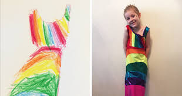
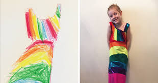

There is a common social problem that has come to my attention in my community. The problem of seeing my fellow youths dressed like they are not in modern world not only youths but also some not knowing what’s trending , looking, bad and am pretty very sure everyone loves looking good especially women. Looking good i not an option but everyone is supposed to look good. My community should about this project because it will improve a lot of peoples lives, a lot will benefit from it, talents will raise, shutted dreams will be active again not only that but it will also help in stopping early marriages.In my community young women and men tend to engage themselves in marriages because some their parents does not have money to take them to school, some they do not have interest in school but have interest in fashion to which they do not have someone support their dreams. Am bringing about this project to help and support my community, mostly those with talents and skills but they do have sponsorship.
Mission statement
We all know that clothes is one of the things that you can not live without,it’s one of our needs weather poor or rich everyone is supposed to have clothes,it’s one of our natural things.
Clothes help people to move in public, making them warm when it’s cold. Coming up with a fashion, designing and modelling agency in my community will bring about development in the community such that it will generate job opportunities for people in the community weather educated or not, skilled or unskilled and also contributing to the global economy. Fashion industry contributes to society: It’s personal, fun, political and reflective. Fashion is more than amped up dress for adults. It’s a reflection of who we are and what we believe. The fashion industry contributes to the society by allowing us to express ourselves, our creativity and our beliefs to the world. In the community will be able to donate excess clothes to the needful and also sell, the workers getting paid(people benefiting).Youths will benefit financially, they will be able to know their abilities,it will also help them to dicover who they are.
About
My names are Isabel Machiya i was born on the 30th june, 2003 , born on the copperbelt currently living in Lusaka, i have a heart of people i just don’t like seeing people suffering especially people of my age, I have ‘passion for Fashion’ not only that am an Actress too. Am multi-talented person.The reason why i chose this project it’s because it is able to help a wide number of people and they will benefit too. Am passionate to change this social problem because a lot of talents have been dormant and make people(especially youths) to discover their abilities that will help them to benefit financially and develop skills.
.jpeg) 
